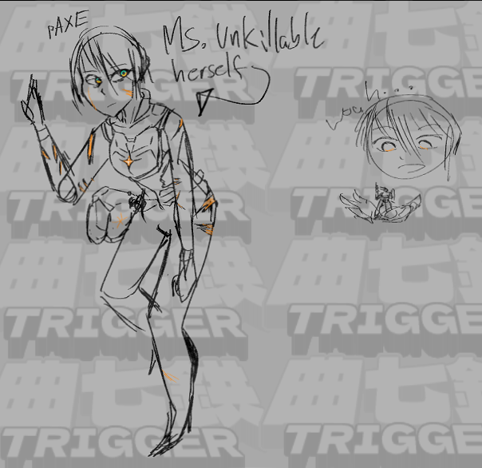

paxe¶
leader of the resistance, resident no-sleep nonce and dumbass. axe lover. do not separate

axe
glint¶
effect: when killed, she gets back up. limited ability to "heal" entities she considers as herself while still alive. eventually, spins out of control. she's the most fucking powerful entity in the universe, most attuned with the dragon's dead.
color: gold.
reason: she's baked her incessant need to keep moving into her DNA, the things that make her her. it's impossible for her to stop, because she's. her. at once she loves and despises this fact; it's tremendously useful, but the weight of eternity hangs heavy on her mind. and the necessary implication that she can never wait and live out her grief basically locks her into attempted uncaring ignorance for all of time.
personal info¶
- her name was unimportant to her. and the onboarding process (not a persona-destructive one, simply the basic training her country gave her) sort of cemented her personality and self as unimportant. useless. so now she's just axe's pilot. the pilot of axe.
- once she starts the resistance, people start needing to call her something. she just tells them to call her "pilot of axe", since that's what she is. the first person to join her -- her looper -- calls her paxe, and the nickname sticks against all odds. when looper dies, she holds the name close to her chest even though it burns her. it becomes her callsign, too, though she's given nicknames as well.
traits¶
- a distraught individual
- always a little bit dishevelled. has little regard for her own life until axe comes into it
- hyper-competent given her hundreds and hundreds of years fighting in her AXMS. is a fan of up-close weaponry, high power revolvers and short blades. does not fucking talk on the battlefield when she can help it -- as soon as she gets the tech, she builds a neural interface to mentally send commands when she's part of the resistance.
- when she starts the resistance, she's typified as a deity on the battlefield. she rarely participates in larger battles, preferring to strike from the shadows and assassinate targets silently, but when she does waltz onto the field she kind of goes fucking nuts. rarely do many people survive. fires in every place and shes putting em all out.
- she's more talkative when strategically planning battles or tactically commanding groups. even still.
- after she's in the resistance, she's given a commander's uniform by some of the other pilots. she wears them begrudgingly, but never does her hair. it never grows all that long. she dies and revives enough that it's rare for her to look like someone with longer than shoulder length hair.
- chain smoker
- regularly comes off as detached to those in her inner circle she asks to do work for her. never wholly focused on the latest tragedy or the latest strategic problem, because she's too old to stop thinking in the long term. if she slows down, she will stop, and she'll never start back up. or at least, that's what she thinks.
- she dies in AXE's arms, blood seeping out from a wound in her chest and preserving the area. it turns into a fountain; a healing pool of blood with a rusted mechanical shell and perfectly-preserved body at the center. as time goes on, it becomes ritualised for younger pilots to partake of the fountain.